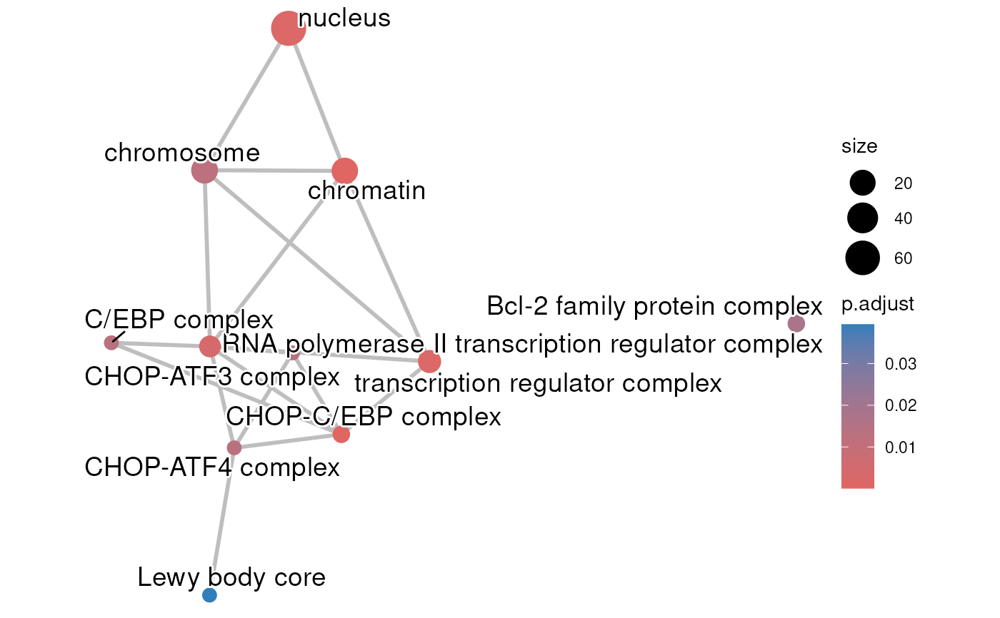

Using functional enrichment results in gprofiler2 format to create an enrichment map
Source:R/methodsEmap.R
createEnrichMap.RdUser selected enrichment terms are used to create an enrichment map. The selection of the term can by specifying by the source of the terms (GO:MF, REAC, TF, etc.) or by listing the selected term IDs. The map is only generated when there is at least on significant term to graph.
Usage
createEnrichMap(
gostObject,
query,
source = c("TERM_ID", "GO:MF", "GO:CC", "GO:BP", "KEGG", "REAC", "TF", "MIRNA", "HPA",
"CORUM", "HP", "WP"),
termIDs = NULL,
removeRoot = TRUE,
showCategory = 30L,
categoryLabel = 1,
categoryNode = 1,
line = 1,
...
)Arguments
- gostObject
a
listcorresponding to gprofiler2 enrichment output that contains and that contains the results from an enrichment analysis.- query
a
characterstring representing the name of the query that is going to be used to generate the graph. The query must exist in thegostObjectobject.- source
a
characterstring representing the selected source that will be used to generate the network. To hand-pick the terms to be used, "TERM_ID" should be used and the list of selected term IDs should be passed through thetermIDsparameter. The possible sources are "GO:BP" for Gene Ontology Biological Process, "GO:CC" for Gene Ontology Cellular Component, "GO:MF" for Gene Ontology Molecular Function, "KEGG" for Kegg, "REAC" for Reactome, "TF" for TRANSFAC, "MIRNA" for miRTarBase, "CORUM" for CORUM database, "HP" for Human phenotype ontology and "WP" for WikiPathways. Default: "TERM_ID".- termIDs
a
vectorofcharacterstrings that contains the term IDS retained for the creation of the network. Default:NULL.- removeRoot
a
logicalthat specified if the root terms of the selected source should be removed (when present). Default:TRUE.- showCategory
a positive
integerrepresenting the maximum number of terms to display. If ainteger, the firstnterms will be displayed. IfNULL, all terms will be displayed. Default:30L.- categoryLabel
a positive
numericrepresenting the amount by which plotting category nodes label size should be scaled relative to the default (1). Default:1.s- categoryNode
a positive
numericrepresenting the amount by which plotting category nodes should be scaled relative to the default (1). Default:1.- line
a non-negative
numericrepresenting the scale of line width. Default:1.- ...
additional arguments that will be pass to the
emapplotfunction.
Examples
## Loading dataset containing result from an enrichment analysis done with
## gprofiler2
data(parentalNapaVsDMSOEnrichment)
## Extract query information (only one in this dataset)
query <- unique(parentalNapaVsDMSOEnrichment$result$query)
## Create graph for Gene Ontology - Cellular Component related results
createEnrichMap(gostObject=parentalNapaVsDMSOEnrichment,
query=query, source="GO:CC", removeRoot=TRUE)
